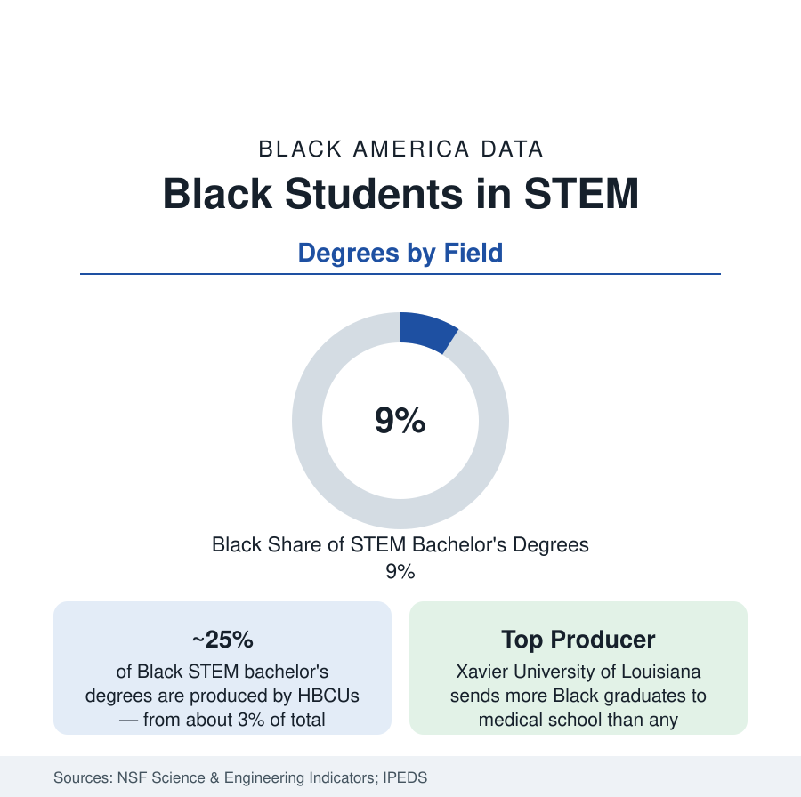

Black Education
Black Students in STEM: Degrees, Fields, and the HBCU Pipeline
Black students earn about 9 percent of STEM bachelor's degrees — with HBCUs producing a quarter of them from 3 percent of enrollment. The NSF data profile.

Black students earn about 9 percent of the bachelor's degrees awarded in science and engineering fields in the United States — against 12 to 13 percent of the college-age population and 15 percent of K-12 enrollment — with the share varying sharply by field and one institutional sector producing a quarter of the whole from 3 percent of the seats. This article reports the STEM degree data from the National Science Foundation's indicators, the field-by-field distribution, and the HBCU pipeline that the numbers keep surfacing.
The Field Distribution
The 9 percent average conceals a spread the indicators report field by field. Black graduates earn their largest shares in the social and behavioral sciences and in health-related fields, shares near or above the overall STEM average in biology, and their smallest shares in the physical sciences and engineering — engineering bachelor's degrees run around 5 percent Black, computer science in the range of 8 to 9 percent, mathematics and statistics lower, physics lowest of the major fields. The graduate data thin further: Black students earn roughly 7 to 8 percent of STEM master's degrees and a smaller share — in the range of 4 to 6 percent — of research doctorates in most science and engineering fields, with the field spread repeating (health and education-adjacent doctorates higher; engineering and physical-science doctorates lowest). The employment section's technology profile is this distribution, one stage later.
The HBCU Overproduction
The indicators' most repeated finding is institutional. HBCUs — enrolling roughly a tenth of Black undergraduates and about 3 percent of all students — award on the order of a quarter of the bachelor's degrees Black students earn in STEM fields, and the NSF's baccalaureate-origin tables for Black science doctorates place HBCUs at the top of the producer list: a disproportionate share of Black Americans who earn PhDs in the sciences did their undergraduate work at an HBCU. The exemplar in the health pipeline is Xavier University of Louisiana, which for decades has sent more Black graduates to medical school than any institution in the country — more than universities many times its size — through a premedical program whose structure is a small literature of its own. Spelman, Howard, Morehouse, Florida A&M, and North Carolina A&T (the nation's largest HBCU and a top engineering producer) recur across the producer tables.
Where the Pipeline Narrows
The indicators locate the constrictions stage by stage. The first is preparation: the K-12 data's course-offering and completion gaps — calculus and physics access in majority-Black high schools — arrive at college as placement gaps in the STEM gateway sequences. The second is the gateway courses themselves: introductory chemistry, calculus, and programming sequences record the highest attrition differentials, and the major-switching data show Black STEM entrants leaving the fields at higher rates than their grades alone predict — the finding behind the mentoring and cohort-program literature. The third is research access: undergraduate research experience, the strongest predictor of graduate STEM entry in the data, is distributed unevenly, with the HBCU and structured-program environments supplying it most reliably to Black students. Financial pressure runs through all three stages in the debt article's data.
Women in the STEM Data
Black women earn the majority of the STEM degrees Black students receive — roughly three in five at the bachelor's level, consistent with the overall enrollment pattern — making Black women's STEM outcomes the larger part of this profile's subject. Their field distribution leans further toward biology, health, and the social sciences and thinnest in engineering and computer science, where Black women form one of the smallest demographic cells in the entire degree data — a share of engineering graduates in the range of 1 to 2 percent. The representation programs documented in the field literature concentrate accordingly.
Reading the STEM Data
The STEM profile's two numbers belong together: 9 percent of the degrees, a quarter of them from 3 percent of the seats. The first measures the gap; the second identifies the machinery that closes it where it operates. The policy debate in the literature — scaling the HBCU model versus repairing the mainstream pipeline — is an argument the data frame but do not settle, and this reference reports it at exactly that status.
More in Black Education
Black Educational Attainment: High School Parity, the College Gap
About 89 percent of Black adults hold a high school diploma and one in four holds a bachelor's degree or higher — the attainment ladder, the college completion gap, and the generational trend.
Historically Black Colleges and Universities: Enrollment and Degrees
More than 100 HBCUs enroll roughly 290,000 students and award about one in six Black bachelor's degrees — an outsized share from a small sector. The federal education data.
Black College Enrollment: 2.4 Million Students
About 2.4 million Black students are enrolled in American colleges — nearly two-thirds of them women. The NCES enrollment data by sector, level, and trend.
Source: National Science Foundation, Science and Engineering Indicators and NCSES degree data; National Center for Education Statistics, IPEDS.